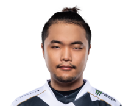
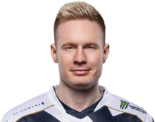
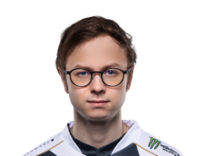
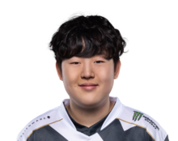
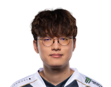
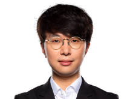
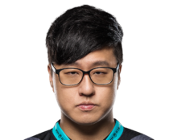
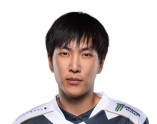

Team Liquid League of Legends Team
Main Team
Top Lane
Jung "Impact" Eon-yeong, is currently the top laner for Team Liquid's League of Legends Team. He was born on Match 7, 1995 in South Korea.
Jungle
Mads "Broxah" Brock-Pedersen is currently the jungler for Team Liquid's League of Legends Team . He was born on August 12, 1997 in Denmark.
Mid Lane
Nicolaj "Jensen" Jensen is currently the mid laner for Team Liquid's League of Legends Team. He was born on January 1, 1995 in Denmark.
AD Carry
Edward "Tactical" Ra is currently the AD Carry for Team Liquid's League of Legends Team. He was born on August 18, 2000 in the US.
Support
Jo "CoreJJ" Yong-in is currently the support for Team Liquid's League of Legends Team. He was born on June 22, 1994 in South Korea.
Coaching Staff
Head Coach
Jang "Cain" Nu-ri is currently the Head Coach for Team Liquid's League of Legends Team. He was born on February 6, 1987 in South Korea.
Assistant Coach
Kang "Dodo" Jun-hyeok is currently the Assistant Coach for Team Liquid's League of Legends Team. He was born on February 25, 1989 in South Korea.
Substitute Players
Sub AD Carry
Yiliang "Peter" "Doublelift" Peng is currently a Sub AD Carry for Team Liquid's League of Legends Team. He was born on July 19, 1993 in the US.
